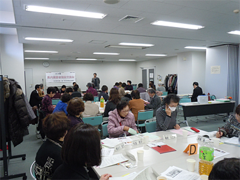
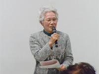
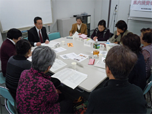
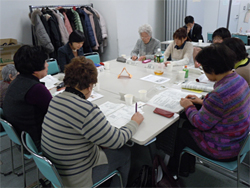
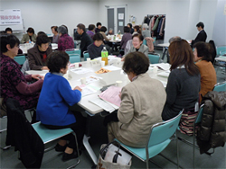
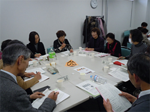

2013年度の県内消費者団体地区別交流会（熊谷会場）が1月21日（火）、熊谷市男女共同参画推進センターで開催されました。

熊谷会場の模様（1月21日）
毎年早春に開催されている地区別交流会は、県内各地域の消費者団体が集まって情報交換し、事例報告を通して、地域の実情に即した活動を考え、消費者活動の活性化につなげていく目的で開催されています。1月21日午後1時30分から開かれた熊谷会場には、地域と県域消費者団体14団体と埼玉県、加須市、さいたま市からも出席していただき、42人が参加しました。
埼玉消団連幹事の宮前やすさん（埼玉母親大会連絡会代表委員）の司会で交流会がすすめられました。
市町村消費生活関連事業調査を終えて
最初に昨年、県内63市町村を対象に実施した「平成25年度 県内市町村消費生活関連事業調査」（＊注）と秋に5つの市でおこなった行政との懇談について、埼玉消団連事務局から概要が報告され、懇談の模様についてそれぞれの消費者団体から報告されました。今回調査結果について事務局から、1.一般会計予算に占める消費者行政関連予算の減少、2.年間相談受付件数が3万件を超える水準で高止まりしていること、3.消費者行政担当部署の兼任化がいっそう進んでいる調査結果が報告され、あわせてこの調査を踏まえ、加須、越谷、志木、所沢、久喜の5市でおこなわれた懇談について報告がありました。
| 加須市くらしの会 杉沢正子さん |
| 久喜市くらしの会 宮内 智さん |
|  |
| 志木市くらしの会 根本マサ子さん |
5つの自治体で懇談をおこないました
続けて各消費者団体から、加須市くらしの会会長 杉沢正子さん、久喜市くらしの会会長 宮内 智さん、志木市くらしの会副会長 根本マサ子さん、行政からさいたま市消費生活総合センター所長の中島知行さんから報告をいただきました。
それぞれの活動報告とあわせて、行政担当窓口との懇談について「国の政策がどのように私たちにつながっているかが分かり、意欲につながりました」、「改めてきちんと話し合うことが出来て、自分たちの活動を理解してもらえました。市も懇談を持ててよかったと言っていただけたことは大きな成果でした」、「市の消費生活展参加団体に参加を呼びかけましたが、今回はくらしの会と医療生協の参加に留まりました。自分たちの力をつけていかなければ」と懇談をふりかえって報告されました。
さいたま市消費生活総合センターの中島所長は、行政の立場から「高齢者被害と相談件数が、さいたま市の人口増加を上回ペースで増えており、3K（高齢・孤独・健康問題）につけ込む被害は許せません。課題が山積する中、さいたま市の新基本計画の中で消費者教育や出来ることを着実におこなっていきます」とさいたま市の消費生活行政について報告いただきました。
後半は、今回の「事業調査」の結果、消費者行政窓口との懇談の報告を受けて、地域でのこれからの活動について4つのグループで話し合い、楽しく交流しました。
＊県内市町村 消費生活関連事業調査
この調査は、県内市町村の消費生活関連事業（消費者行政）課題を把握し、消費者行政の充実強化に向けて行政への要望に反映させること、あわせて消費者が市町村の消費者行政の実情をよく知り、消費者問題への関心を高めていく目的でおこなっているもので、1999年から開始し今年度で15回目の取り組みとなりました。 ※詳細はこちら【PDF：392KB】
≪グループ交流の模様≫
|  |  |
|  |  |